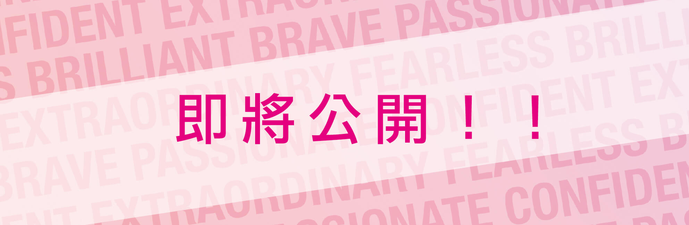

-
NYX Professional Makeup 邀請各位同人們盡情揮灑創意，運用角色扮演展現出六大品牌精神，詮釋出屬於你的”BRAVE 勇敢” ”EXTRAORDINARY非凡” ”CONFINDENT 自信” ” PASSIONATE 熱情” ”FEARLESS 無懼” ”BRILLIANT 閃耀”，所有俱備美麗靈魂的同人們，快一起來用色彩大膽演繹出你對角色的鍾愛。在這令人興奮的年度盛事，歡迎您邀請您的朋友一同前來共襄盛舉，留下您精彩的回憶。
冠軍 – 前往洛杉磯參加NYX Professional Makeup FACEAWARD 頒獎典禮，並獲得價值 NT$30,000之NYX Professional Makeup彩妝商品+高士比提供獎金NT$5,000與夏日遊艇祭入場卷一張
亞軍 – 獲得價值NT$20,000之NYX Professional Makeup彩妝商品+高士比提供獎金NT$4,000與夏日遊艇祭入場卷一張
季軍 – 獲得價值NT$10,000之NYX Professional Makeup彩妝商品+高士比提供獎金NT$3,000與夏日遊艇祭入場卷一張
【主辦單位】
- 主辦單位:NYX Professional Makeup(台灣萊雅股份有限公司消費用品事業部），台灣台北市信義區信義路五段7號22樓
- 協辦單位:高士比國際股份有限公司
- 承辦單位:絕不有限公司
【彩妝大賽時程規劃】
以下台灣標準時間標準時間（UTC+8小時）為主。- EMAIL報名時間：2018/3/5活動網頁上線後 至2018/3/19 23：59 截止。
- 票選名單公佈：2018/3/21，12:00（作品將會於徵集完畢後，統一由主辦單位發佈）。
- 線上票選時間：2018/3/21，12:00至 2018/3/31 23：59 截止。
- 決賽名單公布：2018/4/2， 16:00（決賽流程細則將另行MAIL通知決賽入圍者）。
- 決賽時間：2018/4/14，14:00-16:00 (忠孝SOGO前廣場)。 ＊請依排定日期時間報到，遲到視同棄權
【活動獎項】
- 冠軍：前往洛杉磯參加NYX Professional Makeup FACEAWARD頒獎典禮，並獲得價值 NT$30,000之NYX Professional Makeup彩妝商品+高士比提供獎金NT5,000與夏日遊艇祭入場券一張。
- 亞軍：獲得價值 NT$20,000之NYX Professional Makeup彩妝商品+高士比提供獎金NT$4,000與夏日遊艇祭入場券一張。
- 季軍：獲得價值 NT$10,000之NYX Professional Makeup彩妝商品+高士比提供獎金NT$3,000與夏日遊艇祭入場券一張。
- 入圍獎：獲得價值 NT$3,000之NYX Professional Makeup彩妝商品+高士比提供獎金NT$1,000與夏日遊艇祭入場券一張。
應納稅額：得獎者須負責繳納所有適用中華民國法律規定之稅金，以及由於收到獎品而產生與獎品收受和使用相關，但本文未具體說明的任何其他成本和費用。 -
【參賽資格】
- 2018 NYX Professional Makeup Luv Out Loud真本色、大聲愛COSPLAY彩妝造型大賽（下稱「比賽」）是開放給中華民國合法居民參賽，參賽者在遞交報名表格時必須年滿14歲。若參賽者在報名時未年滿20歲，必須先得到其家長或合法監護人同意以下的官方比賽規章及規則。主辦單位NYX Professional Makeup及所有協辦單位之職員、家屬（父母、子女、配偶、兄妹弟姊妹及其配偶）及住在同一單位的人（不論是否直屬親屬）均不得參賽，以示公允。比賽的條款及細則均受中華民國法律管轄。
- 入圍參賽者須提供身份證明文件予主辦及協辦單位以核實官方比賽條款及細則列明之參賽資格，包括參賽者的背景調查和報名表格內填妥的資料。主辦及協辦單位保留判斷參賽者之參賽資格的一切權利。適用於得獎者的其他參賽資格規定如下所述。
【參賽方式】
請參賽者務必所有步驟完成，並收到確認MAIL回信後，才算正式參賽喔！- Step1：下載報名表填寫，並附上三張照寄至 service@3cosplay.com 信箱
- 投稿主旨：2018 NYX Luv Out Loud真本色、大聲愛COSPLAY彩妝造型大賽-(暱稱名)-(造型主題名稱)
- 投稿標準格式：
- 【主題】2018 NYX Luv Out Loud真本色、大聲愛COSPLAY彩妝造型大賽-(暱稱名)-(造型主題名稱)
- 【附屬檔案上傳】附上臉部妝容與造型清晰之照片三張（照片像素：1280x 720 或 720 x 1280 pixels，72dpi ） ※參賽作品嚴禁失真後製<如剪/貼物件、拼接等，光線微調則不在此限> “點我下載“
- Step2：待審核通過(需1至2個工作天)，收到MAIL回信通知才算報名成功。
- Step3：報名成功後，以網路票選成績最佳者，取前10名入圍決賽。
【決賽地點交通資訊】
106台北市忠孝東路四段45號
忠孝SOGO前廣場
- 捷運
-
忠孝復興站
請搭乘台北捷運藍線-板南線於忠孝復興站4號出口出站，步行至SOGO百貨忠孝館
- 公車
-
捷運忠孝復興站(復興南路)
685、74、521、667、74、903
-
捷運忠孝復興站(忠孝東路)
204、204(區間)212、212(直行車)、232、232(副)、262、262(區間)、299、605、605(副)、605(新台五線)、忠孝新幹線3
-
頂好市場(忠孝東路)
204、204(區間)、212、212(直行)、232、232(副)、262、262(區間)、278、299、521、605、605(副)、605(新台五線)、667、903、忠孝新幹線
- 自行開車
請沿忠孝東路往敦化南路方向行駛，與復興南路交叉口
-
